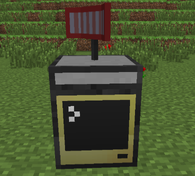

"Base Logger" What's a good name?
Using ComputerCraft and OperPeriperalAddons, monitor your base online. Track users that enter/leave the area and what changes have been made to their inventory.
NOTE: This system is extermely new and full of bugs at the moment. Setup for testing purposes only
1. Create Account

2. Setup Sensor(s)

3. Track Players
Features
- Setup unlimited sensors. Custom name each.
- Track users leaving/entering area
- Track inventory changes while within range
- Add whitelisted players that are ignored by sensors
- Much more to come..
Setup
- Create an account on this site.
- Place an advanced computer with an open periperal sensor on top. (as pictured above)
- On the computer run: "pastebin get Q8ah3K9S install", followed by "install"
- Follow the onscreen instructions to name the sensor and register it to your account.
- Open web console
- That's it! Repeat for as many sensors as you need.
Notes
- Just because something entered someones inventory on your log, does not 100% mean they stole it!
- By default, sensor only scan within a 5 block radius. Recommended to place by ME Terminals, chests, and doors.
- Server admins can increase sensor range in server configs.
- Sensors only need to be registered once. As long as the computer isn't broken, they will continue to log to your acount, even after server restarts